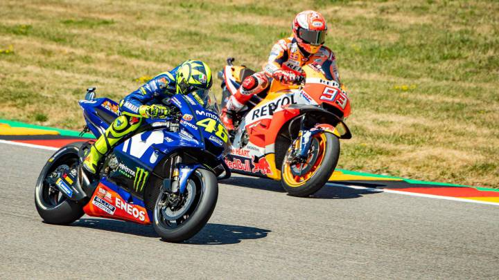

Historia de MotoGP:
'MotoGP', El Campeonato Mundial de Motociclismo (oficialmente, FIM World Championship Grand Prix pero que popularmente recibe el nombre de la categoría principal de MotoGP, es la máxima competición mundial de motociclismo de velocidad. Este certamen, conocido a veces como Campeonato del Mundo de Velocidad, está regido por la Federación Internacional de Motociclismo y se divide en tres categorías: MotoGP, Moto2 y Moto3. Las motocicletas del campeonato son construidas exclusivamente para esta competición, no para la comercialización al público; esto se diferencia de otros campeonatos que usan motos derivadas de las de serie, como las Superbikes, las Supersport y las Superstock.
Divisiones:
Se trata de la "categoría reina" del campeonato, pues en ella compiten las motos de mayor cilindrada. Desde mediados de los 70 hasta el año 2002, la categoría permitía una cilindrada de 500cc sin tener en cuenta si el motor era de dos o cuatro tiempos. Debido a esto, todos los motores eran de dos tiempos gracias a su mayor entrega de potencia a igual cilindrada. En 2002 se cambió la reglamentación para facilitar el salto a los cuatro tiempos, probablemente debido a la baja cuota de mercado de las motos de calle de alta cilindrada y dos tiempos. Las nuevas reglas permitieron a los fabricantes elegir entre motos de dos tiempos (hasta 500c) y motos de cuatro tiempos (hasta 990cc). 